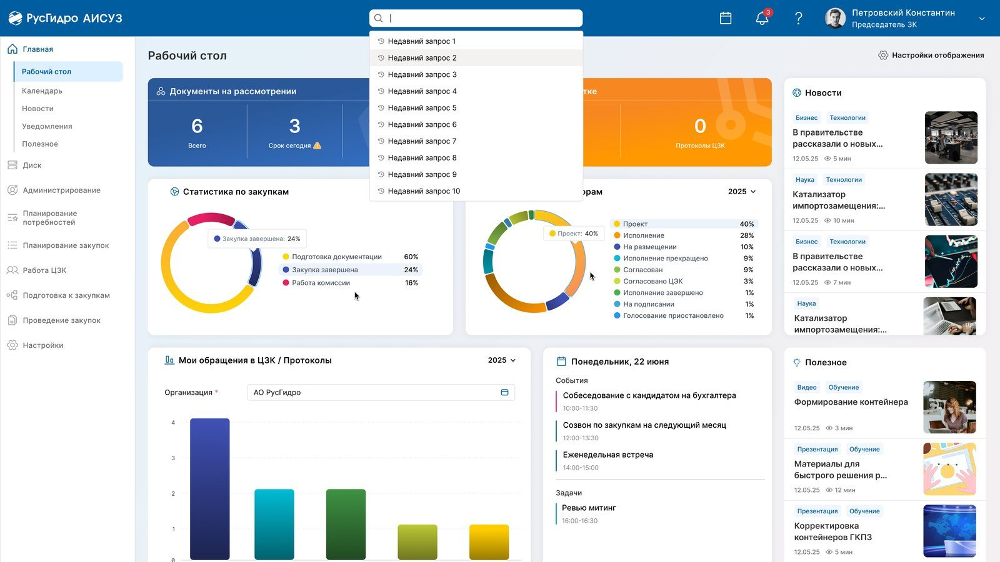

← Все работы
Enterprise · BPM · госкорпорация
АИСУЗ для РусГидро
Автоматизированная информационная система управления закупками: пятнадцать модулей внутренних бизнес-процессов, сложное согласование, ЭЦП и тринадцать интеграций.
15 модулейвнутренних бизнес-процессов
7 + 6интеграций: системы заказчика и госсистемы
~200 стр.ТЗ на каждый модуль

О проекте
На каждый модуль — от 150 до 250 страниц технического задания, свой макет и общая дизайн-система.
Стартовый экран собирает в одном месте всё, что нужно участнику закупочного процесса: документы на рассмотрении, статистику, календарь и материалы для работы. Состав виджетов настраивается под роль пользователя.
Модули системы
- Управление пользователями с ролевой моделью
- Облачное хранилище файлов
- Журнал всех операций пользователей
- BPM-модуль: согласование на 200 страниц ТЗ
- Электронная цифровая подпись
- Модуль справочников
- Модуль шаблонов и отчётов
- Ещё 8 модулей внутренних бизнес-процессов
Архитектура
- Микросервисы на FastAPI и Python, компоненты на Go для высоконагруженных задач
- Асинхронный обмен через RabbitMQ, запуск в Docker Compose
- Tantor SE 16, SQLAlchemy 2.0 async, Alembic
- Файлы в MinIO, полнотекстовый поиск в Elasticsearch
Нужен подрядчик
Есть похожая задача?
Пришлите ссылку, Figma, ТЗ или пару предложений о задаче. Посмотрим объём и скажем, чем можем помочь.